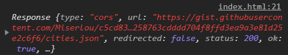
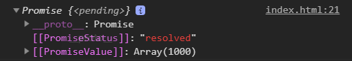
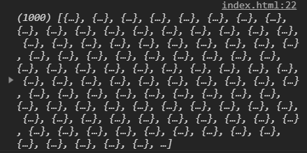
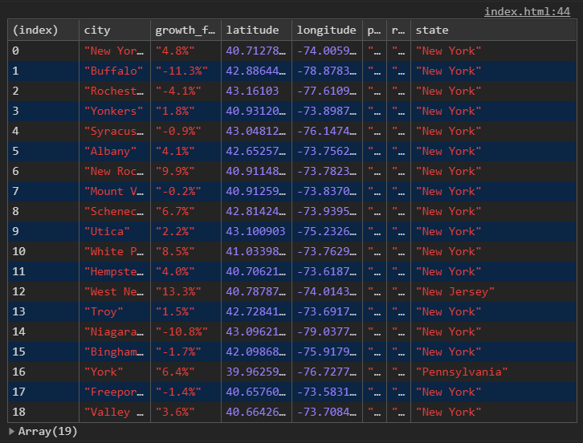
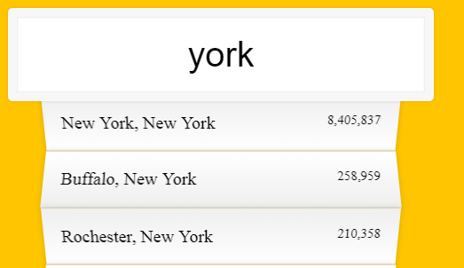

今天要做的功能也滿常見的，資料過濾（篩選）並呈現在畫面上。
資料取得
範例提供的資料是一個json檔，後面我們還可以利用其他方式快速讀取這些資料。這裡我們透過fetch來取得
fetch()方法是一個位於全域window物件的方法，它會被用來執行送出Request(要求)的工作，如果成功得到回應的話，它會回傳一個帶有Response(回應)物件的已實現Promise物件。
一步一步來看看fetch做了什麼1
2
3
4
5
6const endpoint = '資料網址';
fetch(endpoint)
.then(blob=>{
return blob.json()
})
補充:ES6的箭頭涵式如果帶有括號，必須自己補上
return
先console.log(blob)

再加上.json()

好像快看到我們要的資料了…
最後再把data存入我們的cities1
2
3
4
5
6
7
8
9let cities = [];
fetch(endpoint)
.then(blob=>{
return blob.json()
})
.then(data=>{
cities = data
});
資料取得就完成了！

定義變數和事件
一樣把我們會用到的變數和事件先定義出來
1 | const searchInput = document.querySelector('.search'); |
觸發事件
我們先想一下觸發事的瞬間，一共要做的事情有哪些(盡量按照順序)：
- 觸發事件(輸入文字,取得我輸入的文字)
- 撈資料(去資料庫找出符合我的文字的資料)
- 轉成html(將找到的資料轉換為html(並加上highline))
- 顯示到畫面上
一個一個來看~
輸入文字
1 | searchInput.addEventListener('input',Handler) |
觸發事件執行Handler，我的文字就是this.value
撈資料
撈資料這件事我們另外用一個涵式去取得1
2
3
4
5
6
7
8
9//帶入我輸入的文字this.value
const mySerchText = findData(this.value))
function findData(myvalue){
return cities.filter(place=>{
const regex = new RegExp(myvalue, 'gi')
return place.city.match(regex) || place.state.match(regex)
})
}
new RegExp(myvalue, 'gi')：
myvalue：含有myvalue(字串)
gi：(比對方式)
- g = 全局匹配;找到所有匹配，而不是在第一个匹配后停止。
- i = 不分大小寫
正則表達式介紹，不用背，知道怎麼用就好…
當我們試著輸入york，console.log(mySerchText)會得到

city和state含有york(不分大小寫)的資料都被我們撈出來了！
如果不用正則
當然也可以運作，但效果就不是我們要的了，
我們試著只用filter去過濾：1
2
3const mySerchText = cities.filter(place=>{
return place.city.includes(this.value)||place.state.includes(this.value)
})//不用正則運算式的話只能找到完全相符的(限制大小寫)
如果輸入小寫的”y”ork就會發現找不到資料了
轉成html
我們取得的place.city和place.state(也就是等於我們的this.value)只是字串
我們要替他加上highline有很多種辦法，因範例替我們寫好class所以我們直接把他們加上<span class="hl">
str.replace(regexp|substr, newSubstr|function)
replace() 方法會傳回一個新字串，此新字串是透過將原字串與 pattern 比對，以 replacement 取代吻合處而生成。pattern 可以是字串或 RegExp，而 replacement 可以是字串或函式（會在每一次匹配時被呼叫）。原始的字串會保持不變。
更多replace介紹
白話解釋：str.replace(a, b) ，把str這串文字裡面的a，取代為b
以下是錯誤寫法1
2const cityName = place.city.replace(this.value, `<span class="hl">${this.value}</span>`)
const stateName = place.state.replace(this.value, `<span class="hl">${this.value}</span>`)
直覺的我們把place.city這串文字裡面的this.value取代為<span class="hl">${this.value}</span>
但是，我們如果輸入的是小寫！會發現畫面並沒有加上highline：

所以我們要再把this.value做正則判斷，讓這個值不分大小寫。
正確寫法：1
2
3
4
5
6
7
8
9
10
11
12const html = mySerchText.map(place=>{
const regex = new RegExp(this.value,'gi')
const cityName = place.city.replaceWith(regex, `<span class="hl">${this.value}</span>`)
const stateName = place.state.replace(regex, `<span class="hl">${this.value}</span>`)
return `
<li>
<span class="name">${cityName}, ${stateName}</span>
<span class="population">${numberWithCommas(place.population)}</span>
</li>
`
}).join('');
array.map()方法最後回傳的值為一個陣列，因此需要透過.join('')將陣列轉為字串格式並消除之間的陣列元素之間的,
最後人數的部分我們也可以入正則運算，顯示出我們要的樣子1
2
3function numberWithCommas(x) {
return x.toString().replace(/\B(?=(\d{3})+(?!\d))/g, ',');
};
渲染到畫面上
不用去背起來…未來想到再Google就好
最後渲染到畫面上1
suggestions.innerHTML = html
程式碼
1 | const endpoint = 'https://gist.githubusercontent.com/Miserlou/c5cd8364bf9b2420bb29/raw/2bf258763cdddd704f8ffd3ea9a3e81d25e2c6f6/cities.json'; |